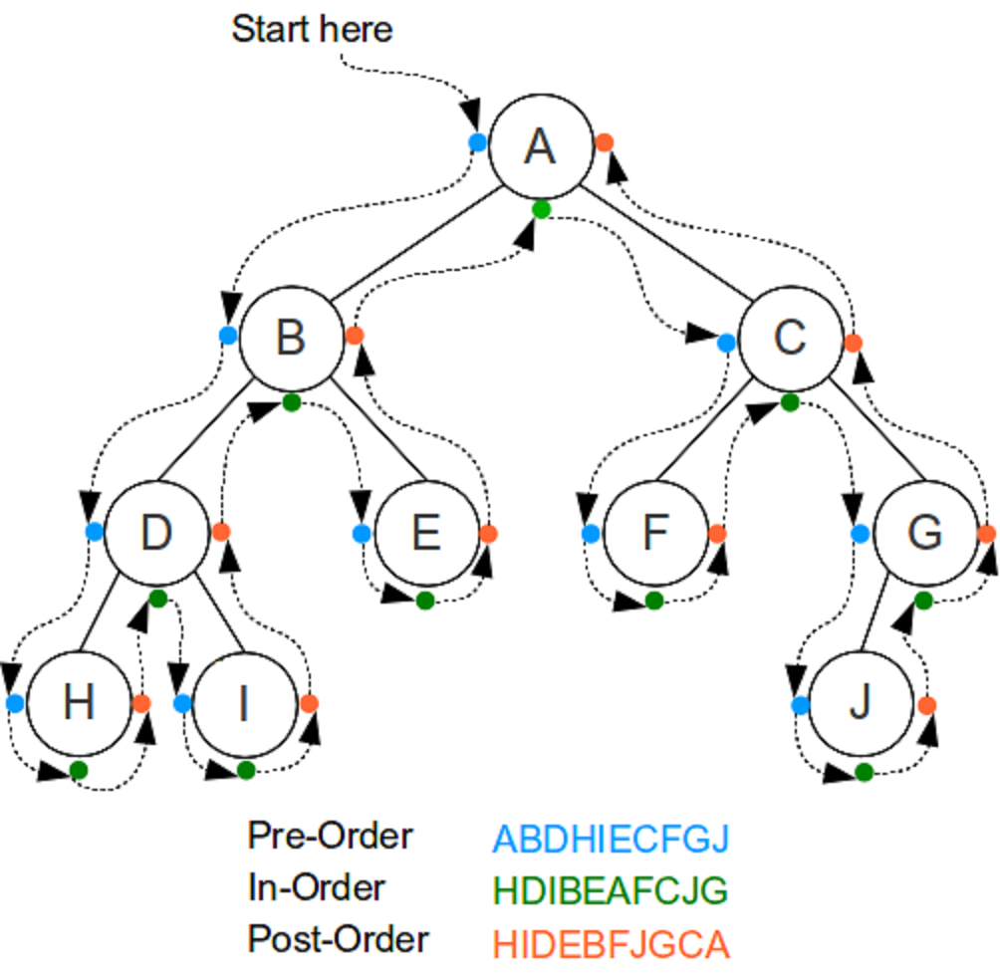

class TreeNode: #4 mins
def __init__(self,data,left=None,right=None):
self.data=data
self.left=left
self.right=right
def insert_node(root_node: TreeNode, target: int):
current_node = root_node
if current_node.data == target:
print(f"t{target}==c{current_node.data}: cant insert duplicates")
return current_node.data
elif target < current_node.data:
print(f"t{target}<-c{current_node.data}: go left")
if current_node.left:
current_node = current_node.left
return insert_node(current_node, target)
else:
print(f"t{target}<-c{current_node.data}: no left_child insert left of c[{current_node.data}]")
current_node.left = TreeNode(target)
return current_node.left
else:
print(f"t{target}->c{current_node.data}: go right")
if current_node.right:
current_node = current_node.right
return insert_node(current_node, target)
else:
print(f"t{target}->c{current_node.data}: no right_child insert right of c[{current_node.data}]")
current_node.right = TreeNode(target)
return current_node.right
def insert_node_clean(root_node: TreeNode, target: int):
current_node = root_node
if current_node.data == target:
# print(f"t{target}==c{current_node.data}: cant insert duplicates")
return current_node.data
elif target < current_node.data:
# print(f"t{target}<-c{current_node.data}: go left")
if current_node.left:
current_node = current_node.left
return insert_node_clean(current_node, target)
else:
# print(f"t{target}<-c{current_node.data}: no left_child insert left of c[{current_node.data}]")
current_node.left = TreeNode(target)
return current_node.left
else:
# print(f"t{target}->c{current_node.data}: go right")
if current_node.right:
current_node = current_node.right
return insert_node_clean(current_node, target)
else:
# print(f"t{target}->c{current_node.data}: no right_child insert right of c[{current_node.data}]")
current_node.right = TreeNode(target)
return current_node.right
def insert_from_list(root, node_list: list[int], show_results:bool = False):
for node in node_list:
if show_results:
insert_node(root, node)
print()
else:
insert_node_clean(root, node)

1. Draw a BST
Insert into a empty BST the folloowing in this order:
[1, 5, 9, 2, 4, 10, 6, 3, 8].
Draw a diagram showing what the BST
1.1 Draw a BST: Tony’s Solution
1
\
5
/ \
2 9
\ / \
4 6 10
/ \
3 82. Search: BST
Find maximum number of steps to search value in Balanced BST with 1,000 values.
2.1 Search: BST - Tony’s Solution
Searching() value in BST is \(\log_2(n)\):
\[steps = \log_2(n)=\log_2(1000)\]
Apply change of base formula:
\[\log_2(1000) = \frac{\log_{10}1000}{\log_{10}2}\]
\[log_{10}1000 = 3\] \[log_{10}2=0.301\]
\[\log_2(1000) = \frac{3}{0.301}\]
\[\approx 9.97\] \[or\ 10\ steps\]
3. max() Value in BST - Tony’s Solution
Write the algorithm to find node with greatest value in BST.
3.1. TreeNode & insert_node: Setup
Introduced previously.
3.2 traverse()
def traverse(root_node: TreeNode):
if not root_node:
return
traverse(root_node.left)
print(root_node.data)
traverse(root_node.right)
root = TreeNode(50)
insert_from_list(root, [25,75,10,35,25])
traverse(root)
10
25
35
50
753.3 find_max() Value in BST - Tony’s Solution
def find_max(root_node: TreeNode):
if not root_node:
return
while root_node.right:
return find_max(root_node.right)
return root_node.data
root = TreeNode(50)
insert_from_list(root, [25,75])
find_max(root)
# PSUEDO
# 50
# 25 75
# [ENTERED]find_max{ [root_node==TreeNode(50)]}:
# - [enter] while-loop: [c.r][75] exists: ---> recurse find_max{[c.r][75]}:
# - [ENTERED]find_max{ root_node.right=TreeNode(75) }:
# - [enter] while-loop: [c.r][N] DOES NOT exists
# - [return] c.data=75
# - [RETURND]{find_max{ ret[75] }
# - [exitd] while-loop: ret[75] <--- from find_max{ TreeNode(75) }
# [return] ret[75]
753.4 find_max() Version 2 - Tony’s Solution
def GET_MAX(root_node: TreeNode):
if not root_node:
return
while root_node.right:
return GET_MAX(root_node.right) # this is hit at every level down and up
return root_node.data # this is only hit once
root = TreeNode(50)
insert_from_list(root, [25,75,80])
GET_MAX(root)
# 50
# 25 75
# 80
# PSUEDO CODE
# [ENTERED]GET_MAX{ [rn=TreeNode(50)]}:
# - (50)[enter] while-loop: [c.r][50.75] YES exists:
# - (50)[enter] GET_MAX{[c.r][50.75]}:
# - (75)[ENTERED] {GET_MAX{ rn==TN(75) }:
# - (75)[enter] while-loop: [c.r][50.75.80] YES exists:
# - (75)[enter] GET_MAX{[c.r][50.75.80]}:
# - (80)[ENTERED] {GET_MAX{ rn=TN(80) }:
# - (80)[skipped] while-loop: [c.r][50.75.80.N] NO xists:
# - (80)[return] c.data=80 (~ return root_node.data)
# - (80)[EXITTED] {GET_MAX{ rn=TN(80) } ---> return 80
# - (75)[exitted] GET_MAX{[c.r][50.75.80]}: ---> return 80
# - (50)[exitted] GET_MAX{[c.r][50.75]}: ---> return 80
# [RETURND] 80 ---> return 80
# - [exitd] while-loop: ret[75] <--- from GET_MAX{ TreeNode(75) }
# [return] ret[75]
804. PRE-order Traversal
Given binary serach tree:
50
/ \
25 75
/ \ / \
10 30 60 80What will pre_order_traversal() print?
def pre_order_traversal(root_node: TreeNode):
if not root_node:
return
print(root_node.data)
pre_order_traversal(root_node.left)
pre_order_traversal(root_node.right)
4.1 PRE-order Traversal: Tony’s Guess without Python
50
25
10
30
75
60
80
50 / \ 25 75 / \ / \ 10 30 60 80
4.2 PRE-order Traversal: Tony’s Solution with Python
def pre_order_traversal(root_node: TreeNode):
if not root_node:
return
print(root_node.data)
pre_order_traversal(root_node.left)
pre_order_traversal(root_node.right)
root = TreeNode(50)
node_list = [50,25,75,10,30,60,80]
insert_from_list(root, node_list, show_results=False)
print("inorder traverse")
traverse(root)
print()
print("preorder traversal")
pre_order_traversal(root)
print()
print("tony expected preorder traversal")
tony_expected = [50,25,10,30,75,60,80]
[print(item) for item in tony_expected]inorder traverse
10
25
30
50
60
75
80
preorder traversal
50
25
10
30
75
60
80
tony expected preorder traversal
50
25
10
30
75
60
80[None, None, None, None, None, None, None] 50
/ \
25 75
/ \ / \
10 30 60 805. POST-order Traversal
Given binary serach tree:
50
/ \
25 75
/ \ / \
10 30 60 80What will post_order_traversal() print?
5.1 POST-order Traversal: Tony’s Guess without Python
- 10
- 30
- 25
- 60
- 80
- 75
- 50
5.2 POST-order Traversal: Tony’s Solution with Python
def post_order_traversal(root_node: TreeNode):
if not root_node:
return
post_order_traversal(root_node.left)
post_order_traversal(root_node.right)
print(root_node.data)
root = TreeNode(50)
node_list = [50,25,75,10,30,60,80]
insert_from_list(root, node_list, show_results=False)
print("inorder traverse")
traverse(root)
print()
print("post_order traversal")
post_order_traversal(root)
print()
print("tony expected post_order traversal")
tony_expected = [10,30,25,60,80,75,50]
for value in tony_expected:
print(value) inorder traverse
10
25
30
50
60
75
80
post_order traversal
10
30
25
60
80
75
50
tony expected post_order traversal
10
30
25
60
80
75
50